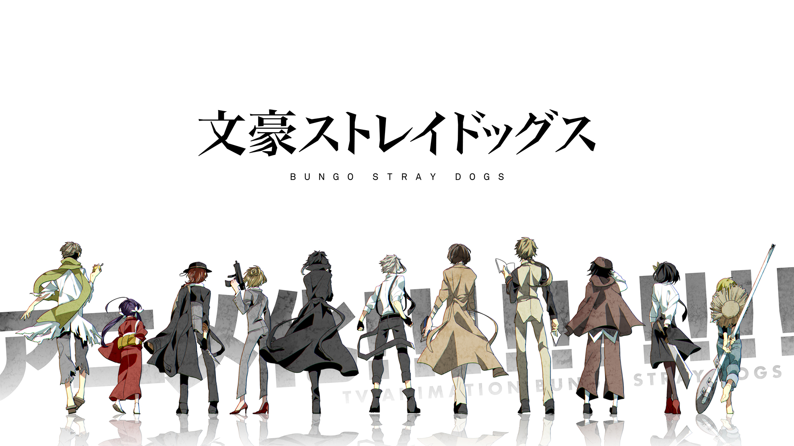

Re: Zero

When Subaru Natsuki leaves the convenience store, the last thing he expects is to be wrenched from his everyday life and dropped into a fantasy world. Things aren't looking good for the bewildered teenager; however, not long after his arrival, he is attacked by some thugs. Armed with only a bag of groceries and a now useless cell phone, he is quickly beaten to a pulp. Fortunately, a mysterious beauty named Satella, in hot pursuit after the one who stole her insignia, happens upon Subaru and saves him. In order to thank the honest and kindhearted girl, Subaru offers to help in her search, and later that night, he even finds the whereabouts of that which she seeks. But unbeknownst to them, a much darker force stalks the pair from the shadows, and just minutes after locating the insignia, Subaru and Satella are brutally murdered. However, Subaru immediately reawakens to a familiar scene—confronted by the same group of thugs, meeting Satella all over again—the enigma deepens as history inexplicably repeats itself.
Bungou Stray Dogs

For weeks, Atsushi Nakajima's orphanage has been plagued by a mystical tiger that only he seems to be aware of. Suspected to be behind the strange incidents, the 18-year-old is abruptly kicked out of the orphanage and left hungry, homeless, and wandering through the city. While starving on a riverbank, Atsushi saves a rather eccentric man named Osamu Dazai from drowning. Whimsical suicide enthusiast and supernatural detective, Dazai has been investigating the same tiger that has been terrorizing the boy. Together with Dazai's partner Doppo Kunikida, they solve the mystery, but its resolution leaves Atsushi in a tight spot. As various odd events take place, Atsushi is coerced into joining their firm of supernatural investigators, taking on unusual cases the police cannot handle, alongside his numerous enigmatic co-workers.
Boku No Hero Academia

The appearance of "quirks," newly discovered super powers, has been steadily increasing over the years, with 80 percent of humanity possessing various abilities from manipulation of elements to shapeshifting. This leaves the remainder of the world completely powerless, and Izuku Midoriya is one such individual. Since he was a child, the ambitious middle schooler has wanted nothing more than to be a hero. Izuku's unfair fate leaves him admiring heroes and taking notes on them whenever he can. But it seems that his persistence has borne some fruit: Izuku meets the number one hero and his personal idol, All Might. All Might's quirk is a unique ability that can be inherited, and he has chosen Izuku to be his successor! Enduring many months of grueling training, Izuku enrolls in UA High, a prestigious high school famous for its excellent hero training program, and this year's freshmen look especially promising. With his bizarre but talented classmates and the looming threat of a villainous organization, Izuku will soon learn what it really means to be a hero.
Koutetsujou no Kabaneri
The world is in the midst of the industrial revolution when horrific creatures emerge from a mysterious virus, ripping through the flesh of humans to sate their never-ending appetite. The only way to kill these beings, known as "Kabane," is by destroying their steel-coated hearts. However, if bitten by one of these monsters, the victim is doomed to a fate worse than death, as the fallen rise once more to join the ranks of their fellow undead. Only the most fortified of civilizations have survived this turmoil, as is the case with the island of Hinomoto, where mankind has created a massive wall to protect themselves from the endless hordes of Kabane. The only way into these giant fortresses is via heavily-armored trains, which are serviced and built by young men such as Ikoma. Having created a deadly weapon that he believes will easily pierce through the hearts of Kabane, Ikoma eagerly awaits the day when he will be able to fight using his new invention. Little does he know, however, that his chance will come much sooner than he expected...
Kiznaiver
Katsuhira Agata is a quiet and reserved teenage boy whose sense of pain has all but vanished. His friend, Chidori Takashiro, can only faintly remember the days before Katsuhira had undergone this profound change. Now, his muffled and complacent demeanor make Katsuhira a constant target for bullies, who exploit him for egregious sums of money. But their fists only just manage to make him blink, as even emotions are far from his grasp. However, one day Katsuhira, Chidori, and four other teenagers are abducted and forced to join the Kizuna System as official "Kiznaivers." Those taking part are connected through pain: if one member is injured, the others will feel an equal amount of agony. These individuals must become the lab rats and scapegoats of an incomplete system designed with world peace in mind. With their fates literally intertwined, the Kiznaivers must expose their true selves to each other, or risk failing much more than just the Kizuna System.